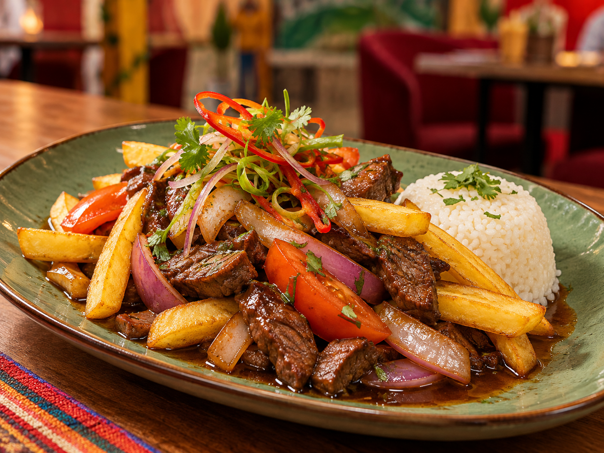
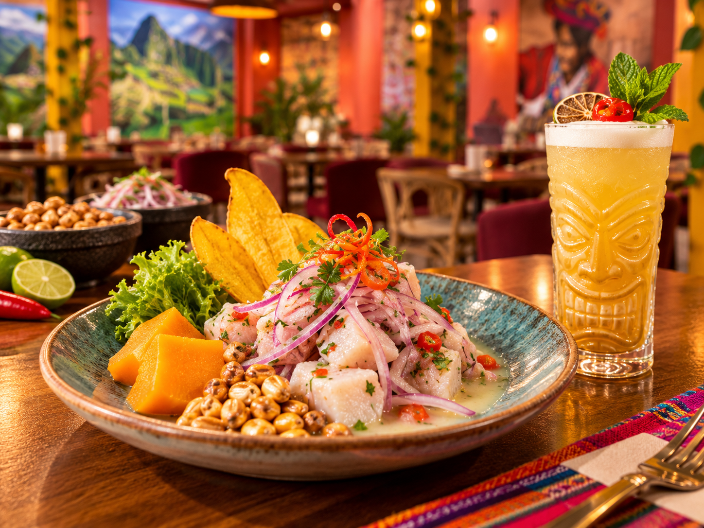
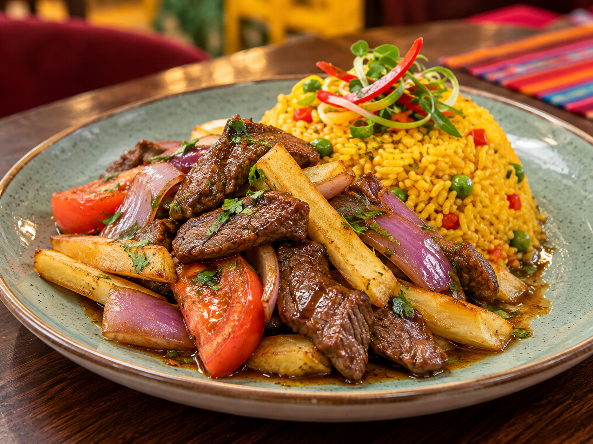
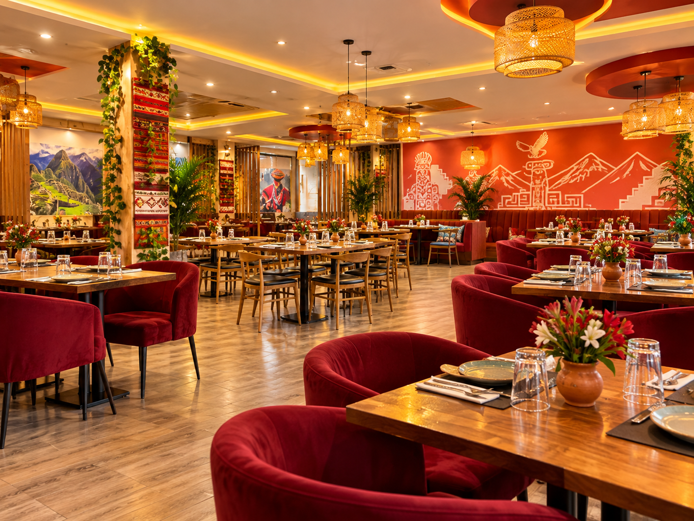
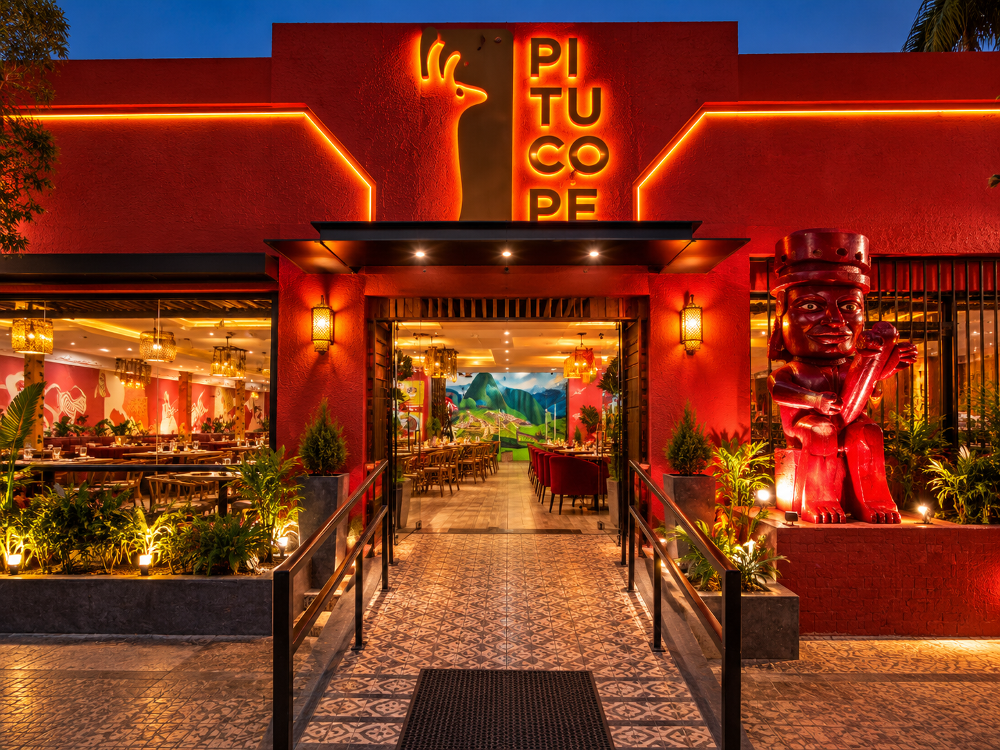

01
SABOR PERUANO · LA FLORIDA, CHILE
EL PERÚ
SE SIRVE
CON TODO.
Sabores que sorprenden. Platos para compartir. Un lugar con personalidad propia, en el corazón de La Florida.
★★★★★4.9/5 en Google · valoración consultada en 2026

UNO DE LOS FAVORITOSLOMO SALTADO
¡QUÉRICO!🇵🇪

CEVICHE
PERUANO
PERUANO
RESTAURANTE · GASTRONOMÍA PERUANADESLIZA PARA DESCUBRIR
LOS PROTAGONISTAS01 / LO QUE NOS MUEVE
NUESTROS
PLATOS.
Una muestra visual de la cocina peruana: lomo saltado, ceviche y arroz con lomo. Cada especialidad acompañada por una fotografía inspirada en los platos del local.
LOMO
CARNE, PAPAS, CEBOLLA Y ARROZ02
CEVICHE
PERUANO
PESCADO, LIMÓN Y ACOMPAÑAMIENTOS
03ARROZ
CON LOMO
ARROZ DORADO Y CARNE SALTEADA

MÁS QUE
UNA COMIDA ✳
UNA COMIDA ✳
VEN A VIVIRLOUN LUGAR
UN LUGAR
PARA QUEDARSE.
Entras por una fachada que no pasa desapercibida. Adentro te recibe un ambiente vibrante: color, detalles inspirados en Perú y un salón pensado para encontrarse.
Una salida con amigos, una comida en familia o simplemente ganas de comer rico. Hay momentos que saben mejor alrededor de una mesa.
Mira nuestro espacio ↗La buena mesa nos une. ✳
UN VISTAZO A PITUCOPE02 / EL AMBIENTE
MÍRALO.
SIÉNTELO.
Un lugar con carácter, cultura, platos coloridos y rincones que invitan a volver. Haz clic para ampliar las imágenes de referencia visual del local.
FOTOS DE REFERENCIA DEL LOCAL Y SUS PREPARACIONES
DEJA EL ANTOJO PARA HOYEL PRÓXIMO PLAN
Consultar por una mesa ↗EL PRÓXIMO PLAN
ES AQUÍ.
ENCUÉNTRANOS03 / VEN A VISITARNOS
CERQUITA
DE TI.
DÓNDE ESTAMOS
Av. Vicuña Mackenna 10046
La Florida, Santiago de Chile
HORARIOS DE REFERENCIA
Lunes a jueves · 12:00 a 22:20
Viernes y sábado · 12:00 a 22:30
Domingo · 12:00 a 22:00
TE ESPERAMOSLA FLORIDA · SANTIAGO
↗